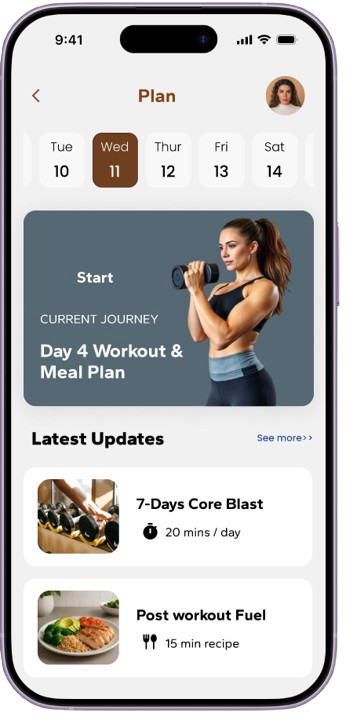
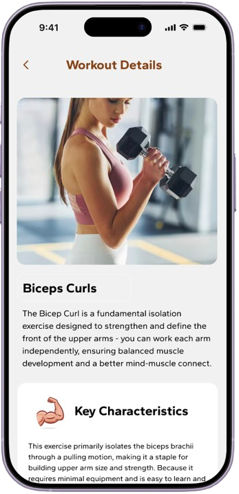

Case Study - Fitness and Habit UX
02. Avptivo
Avptivo is a wellness ecosystem designed to strengthen workout consistency, nutrition clarity, and long-term habit retention.
View full case study on BehanceThe Problem
Users started strong but dropped off when workout, nutrition, and progress tracking were disconnected across the experience.
Workouts, meals, and progress felt like separate products.
Daily habit formation was interrupted by unclear next steps.
Users needed one unified routine rather than fragmented choices.
The Solution
Unify workout, nutrition, and progress into a daily habit loop.
Surface the next best action and reduce cognitive load.
Use motivating feedback and simple visual goals to support retention.
Research Focus
Research was grounded in habit, motivation, and user expectations for daily consistency.
Interviewed users about exercise, food, and routine blockers.
Mapped decision moments before, during, and after workouts.
Validated that simple progress feedback supports daily return.
Figma Screens
A glimpse of the key screens - the full case study with all flows and decisions is on Behance.




